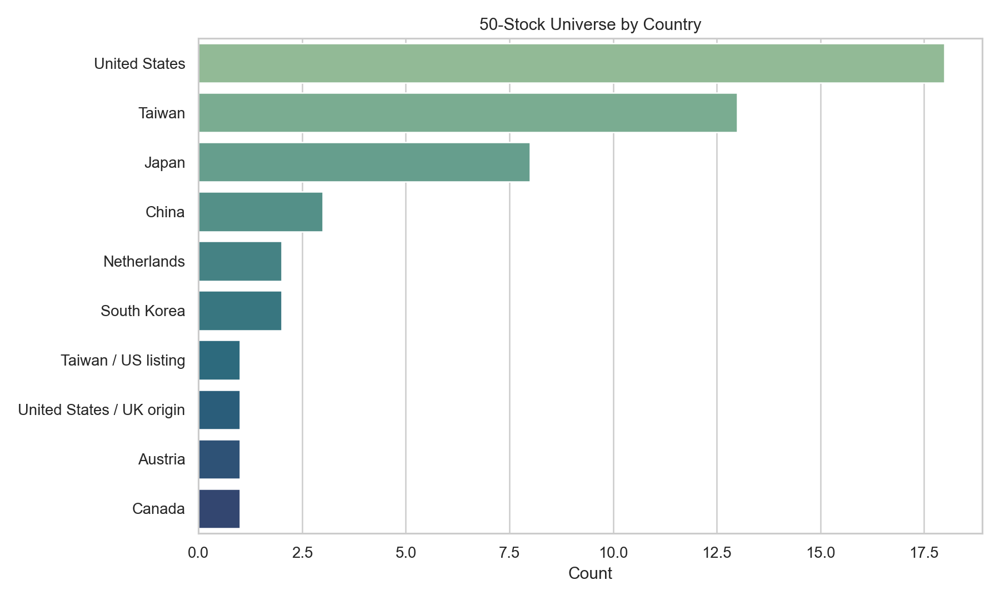
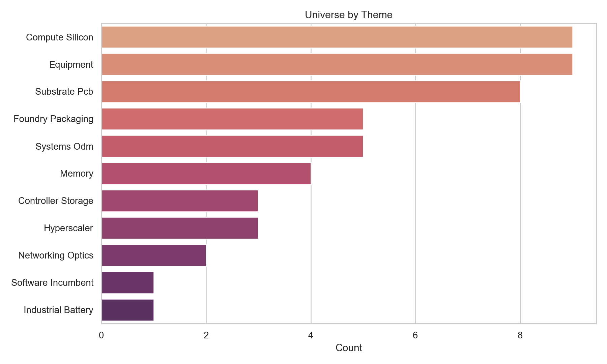
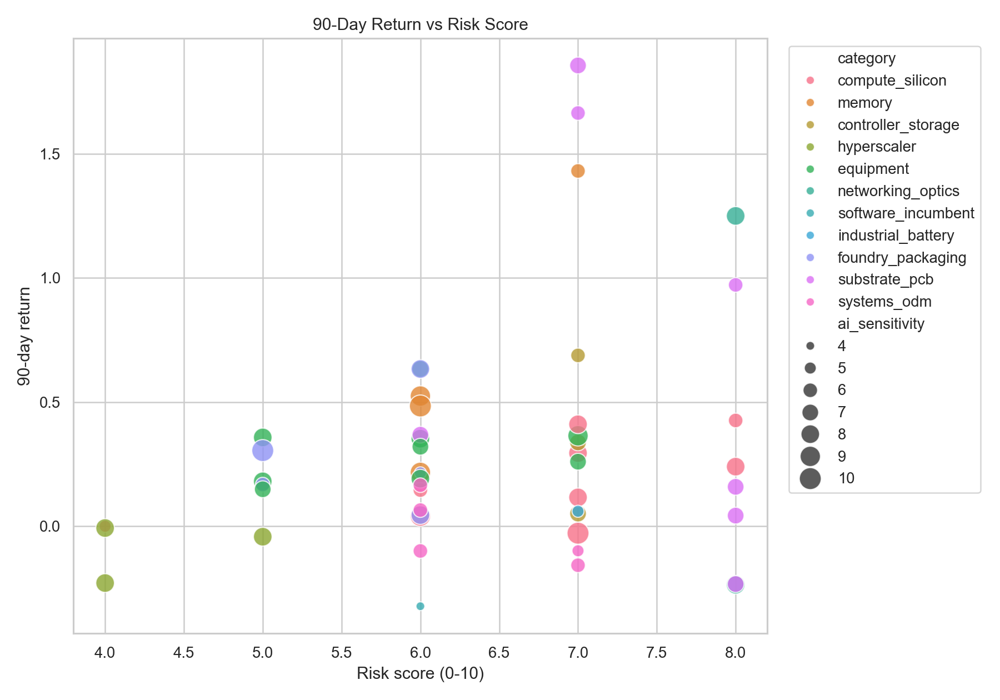
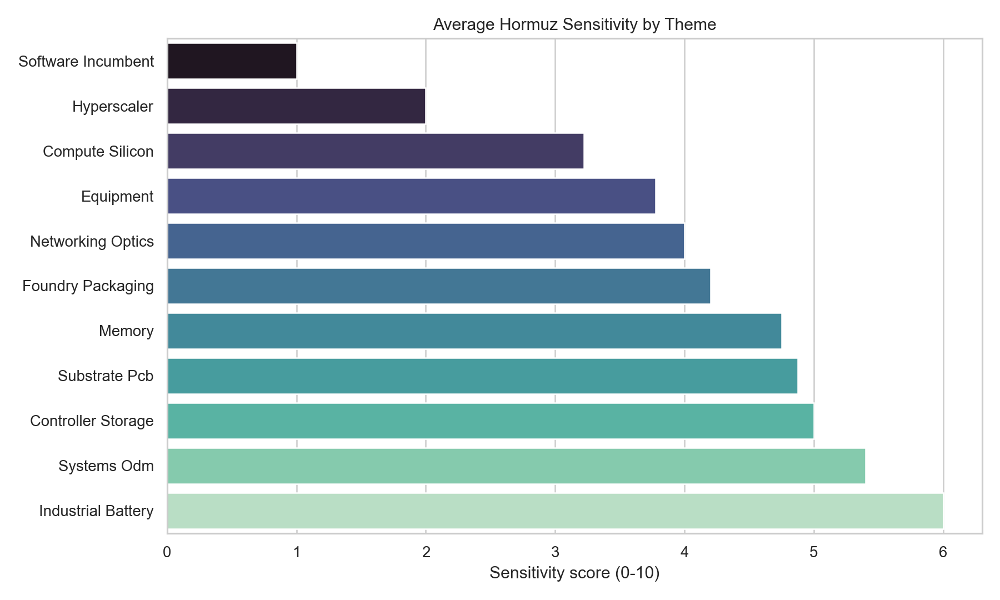
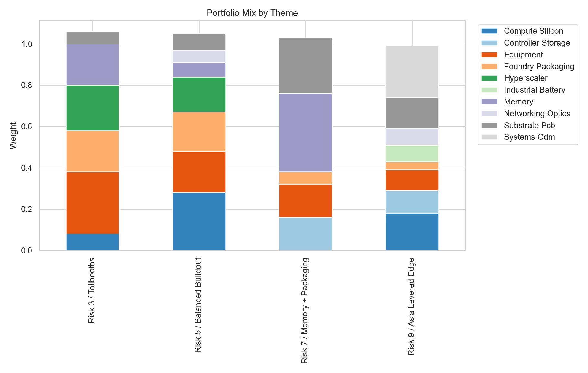

This report reconstructs the public, last-90-day discussion set for @zephyr_z9 and @jukan05,
then turns that into a 50-stock investor universe. Because unauthenticated X access is incomplete, I separate
direct in-range mentions from same-thread supply-chain expansions instead of pretending the public surface is perfect.
The two accounts are mostly talking about one connected system: AI infrastructure. That means GPUs and custom silicon, HBM and NAND, foundry and advanced packaging, high-speed interconnects, and the Asian substrate / PCB / systems stack that has to make the hardware real. The bullish case across the universe is simple: demand for training and inference is still outrunning the supply chain's ability to clear bottlenecks. The bearish case is equally simple: a large part of the market is now pricing in a straight-line AI capex path and a smooth geopolitical backdrop, and neither is guaranteed.
The report's practical stance is that the best risk-adjusted names are tollbooths like TSMC, Samsung, SK hynix, AMAT, ASML, and the hyperscaler balance sheets, while the highest-upside but more fragile trades sit in memory controllers, hybrid bonding, opticals, and smaller Asian PCB / systems names.
Direct X search is login-gated, and the public profile pages surface only a subset of posts. The practical reconstruction path was: search-engine discovery of status URLs, recover the text with public X oEmbed / mirrored renderers, and then connect the in-range tweet text to public-company symbols. I treat that recovered set as the A-tier. Then I add B-tier names when the stock is named in the same in-range thread, attached note, or reliable public quote of the thread. Finally, I add C-tier names only when they are the first-order public equities inside the exact supply-chain node the tweet is discussing.
That is the only honest way to hit a 50-name universe without pretending that X's public surface is exhaustive. If you want literal direct mentions only, use the A-tier subset.





The table below is the working investor universe. Use confidence A if you want the most literal reconstruction of what the accounts discussed. Use B and C if you want to express the same supply-chain view in a fuller portfolio.
| Company | Ticker | Country | Theme | Confidence | Risk | Hormuz | AI Sens. | Price | 90d Return | Mkt Cap |
|---|---|---|---|---|---|---|---|---|---|---|
| NVIDIA | NVDA | United States | Compute Silicon | A | 7 | 3 | 10 | $183.66 | -2.9% | $4.46T |
| Micron | MU | United States | Memory | A | 6 | 4 | 9 | $413.01 | 21.6% | $465.6B |
| Silicon Motion | SIMO | Taiwan / US listing | Controller Storage | A | 7 | 5 | 7 | $127.21 | 5.0% | $4.3B |
| Western Digital | WDC | United States | Controller Storage | A | 7 | 5 | 6 | $337.42 | 68.8% | $115.4B |
| Apple | AAPL | United States | Compute Silicon | A | 4 | 4 | 5 | $260.12 | -0.1% | $3.82T |
| Alphabet | GOOGL | United States | Hyperscaler | A | 4 | 2 | 8 | $319.40 | -0.8% | $3.86T |
| Microsoft | MSFT | United States | Hyperscaler | A | 4 | 2 | 8 | $372.37 | -23.0% | $2.77T |
| Amazon | AMZN | United States | Hyperscaler | A | 5 | 2 | 8 | $231.18 | -4.3% | $2.48T |
| Applied Materials | AMAT | United States | Equipment | A | 5 | 4 | 8 | $396.62 | 35.7% | $314.8B |
| Onto Innovation | ONTO | United States | Equipment | A | 6 | 4 | 8 | $248.82 | 35.2% | $12.4B |
| AMD | AMD | United States | Compute Silicon | A | 7 | 3 | 8 | $234.30 | 11.6% | $382.0B |
| Intel | INTC | United States | Compute Silicon | A | 8 | 3 | 6 | $60.78 | 42.6% | $305.2B |
| Arm | ARM | United States / UK origin | Compute Silicon | A | 7 | 2 | 8 | $149.72 | 29.4% | $159.0B |
| Teradyne | TER | United States | Equipment | A | 6 | 3 | 7 | $363.41 | 63.3% | $56.9B |
| Lumentum | LITE | United States | Networking Optics | A | 8 | 4 | 8 | $884.16 | 125.0% | $63.1B |
| Credo | CRDO | United States | Networking Optics | A | 8 | 4 | 8 | $107.64 | -23.7% | $19.9B |
| Adobe | ADBE | United States | Software Incumbent | A | 6 | 1 | 4 | $228.82 | -32.3% | $93.3B |
| ASML | ASML | Netherlands | Equipment | B | 5 | 3 | 8 | $1450.00 | 18.0% | $569.4B |
| CATL | 300750.SZ | China | Industrial Battery | A | 7 | 6 | 5 | $391.30 | 6.0% | $1.80T |
| Phison | 8299.TWO | Taiwan | Controller Storage | A | 7 | 5 | 7 | $1725.00 | 33.7% | $352.0B |
| Samsung Electronics | 005930.KS | South Korea | Memory | A | 6 | 5 | 9 | $210500.00 | 52.4% | $1346.06T |
| SK hynix | 000660.KS | South Korea | Memory | A | 6 | 5 | 10 | $1033000.00 | 48.4% | $706.88T |
| Kioxia | 285A.T | Japan | Memory | A | 7 | 5 | 6 | $27600.00 | 143.2% | $15.10T |
| TSMC | 2330.TW | Taiwan | Foundry Packaging | A | 5 | 5 | 10 | $1950.00 | 30.4% | $50.70T |
| Kyocera | 6971.T | Japan | Foundry Packaging | A | 5 | 4 | 6 | $2604.50 | 16.7% | $3.41T |
| FIC Global | 3701.TW | Taiwan | Substrate Pcb | A | 8 | 5 | 7 | $56.40 | 15.8% | $12.9B |
| Suntak | 002815.SZ | China | Substrate Pcb | A | 8 | 6 | 7 | $14.59 | 4.2% | $18.2B |
| Kingwong | 603228.SS | China | Substrate Pcb | A | 8 | 6 | 7 | $58.86 | -23.4% | $58.2B |
| AT&S | ATS.VI | Austria | Substrate Pcb | A | 8 | 4 | 6 | $64.00 | 97.2% | $2.5B |
| BE Semiconductor | BESI.AS | Netherlands | Equipment | A | 7 | 4 | 9 | $206.10 | 36.4% | $16.2B |
| Global Unichip | 3443.TW | Taiwan | Compute Silicon | A | 8 | 4 | 8 | $2510.00 | 24.0% | $355.8B |
| Broadcom | AVGO | United States | Compute Silicon | B | 6 | 3 | 9 | $357.27 | 4.0% | $1.69T |
| Marvell | MRVL | United States | Compute Silicon | B | 7 | 3 | 8 | $119.37 | 41.0% | $104.4B |
| MediaTek | 2454.TW | Taiwan | Compute Silicon | B | 6 | 4 | 6 | $1580.00 | 14.5% | $2.51T |
| UMC | 2303.TW | Taiwan | Foundry Packaging | B | 6 | 4 | 5 | $60.30 | 21.5% | $755.3B |
| ASE Technology | 3711.TW | Taiwan | Foundry Packaging | B | 6 | 4 | 8 | $383.00 | 63.3% | $1.72T |
| Amkor | AMKR | United States | Foundry Packaging | B | 6 | 4 | 8 | $55.06 | 4.4% | $13.6B |
| Ibiden | 4062.T | Japan | Substrate Pcb | B | 6 | 4 | 7 | $9794.00 | 36.8% | $2.74T |
| Unimicron | 3037.TW | Taiwan | Substrate Pcb | B | 7 | 5 | 7 | $620.00 | 185.7% | $984.1B |
| Nan Ya PCB | 8046.TW | Taiwan | Substrate Pcb | B | 7 | 5 | 6 | $637.00 | 166.5% | $432.3B |
| Shinko Electric | 6967.T | Japan | Substrate Pcb | B | 6 | 4 | 6 | n/a | n/a | n/a |
| Tokyo Electron | 8035.T | Japan | Equipment | B | 5 | 4 | 7 | $42410.00 | 14.8% | $19.27T |
| Disco | 6146.T | Japan | Equipment | B | 6 | 4 | 7 | $67450.00 | 32.0% | $7.00T |
| Lasertec | 6920.T | Japan | Equipment | B | 7 | 4 | 7 | $39940.00 | 26.0% | $3.47T |
| Advantest | 6857.T | Japan | Equipment | B | 6 | 4 | 8 | $25220.00 | 19.1% | $18.01T |
| Hon Hai / Foxconn | 2317.TW | Taiwan | Systems Odm | C | 6 | 6 | 6 | $201.50 | -10.0% | $2.79T |
| Quanta | 2382.TW | Taiwan | Systems Odm | C | 6 | 6 | 6 | $307.50 | 16.5% | $1.21T |
| Wiwynn | 6669.TW | Taiwan | Systems Odm | C | 7 | 6 | 6 | $3570.00 | -15.8% | $665.3B |
| Wistron | 3231.TW | Taiwan | Systems Odm | C | 7 | 6 | 5 | $131.00 | -10.0% | $421.4B |
| Celestica | CLS | Canada | Systems Odm | C | 6 | 3 | 6 | $325.57 | 6.4% | $37.5B |
Jukan's March and April memory posts are overtly bullish: Samsung is trying to lock in Google and Microsoft under multi-year agreements, hyperscalers are prepaying memory vendors, and TrendForce's Q1/Q2 2026 DRAM/NAND forecasts were revised dramatically upward. Zephyr adds the more nuanced version: spot and consumer pricing can roll over while contract pricing with hyperscalers and OEMs keeps climbing. That split is why the report likes SK hynix, Micron, Samsung, SIMO, Phison, and parts of the test and packaging toolchain.
The accounts keep converging on the same conclusion: the AI stack is no longer just a wafer problem. It is an advanced-packaging, substrate, hybrid-bonding, and inspection problem. Jukan explicitly tied SK hynix to BESI and AMAT for HBM5 bonding and highlighted Onto's inspection wins at Samsung. Zephyr highlighted PCB and substrate names like FIC Global, Suntak, Kingwong, AT&S, and Kyocera. That is why the packaging / substrate bucket gets a large weight in the report.
Zephyr's Rubin CPX post is one of the clearest windows into the 2026 market: the near-term battleground is increasingly about prefill, caching, and effective token economics, not just raw headline FLOPs. That helps Nvidia in the near term, but it also reinforces why custom-ASIC names, merchant networking, and memory-efficient architectures remain important. It also explains why Zephyr is nervous about how quickly the optical / CPO stack could move against copper-centric winners.
Jukan's China posts center on the reality that domestic Chinese supply has improved, but not enough to fully substitute for Nvidia at the frontier. Zephyr's CATL call captures the other side of the China story: domestic champions with enough scale and process know-how can still compound even in a tougher geopolitical environment. That makes China both a structural opportunity and the portfolio's most obvious policy-risk bucket.
The baseline matters. The EIA chokepoint work still points to roughly 20 million barrels per day of oil and condensate transiting Hormuz in the recent baseline, making it the single most important energy chokepoint in the world. Normal vessel counts run around 130-140 ships per day according to shipping-industry tallies. During the March 2026 shock, AP / MarineTraffic reporting showed the system can tighten fast: vessel transits dropped materially and LNG crossings temporarily went to zero.
The first-order effect is obvious: higher oil, LNG, insurance, and freight costs. The second-order effect is where this matters for the stock list. Asian fabs, packaging houses, PCB makers, and server integrators face higher utility and logistics costs; memory pricing can stay tighter for longer because marginal supply becomes harder to clear; and hyperscalers absorb more energy cost but protect the buildout because AI capacity is strategic. The third-order effect is portfolio rotation: the market tends to pay up for tollbooths and capital-light software while compressing the most logistics-intensive or policy-exposed hardware names.
| Bucket | Primary effect | 2nd-order effect | 3rd-order effect |
|---|---|---|---|
| Memory | Power and logistics costs rise | Contract pricing stays tighter | Leaders gain share, weaker names lose elasticity |
| Packaging / substrate / PCB | Freight and chemical costs rise | Lead times stretch further | Customers crowd even more into reliable top-tier suppliers |
| Hyperscalers | Energy bills rise | Capex mix tilts harder toward efficiency | Better economics for custom silicon and efficient serving |
| Networking / optics | Little direct oil exposure | More urgency around utilization and cluster efficiency | Architectures that reduce idle GPU time gain value |
| China / EV / battery | Shipping and policy risk both rise | Export routes and inventory matter more | Higher dispersion across China names |
The most important 2026 shift is that the market is moving from a simple more FLOPs equals more value story to a more nuanced better system efficiency equals more profit per token story.
I built four baskets from the same 50 names. They differ mainly in how much packaging, memory, Asia logistics, and architecture risk they are willing to absorb.
| Portfolio | Risk | Company | Ticker | Weight |
|---|---|---|---|---|
| Risk 3 / Tollbooths | 3 | TSMC | 2330.TW | 12.0% |
| Risk 3 / Tollbooths | 3 | NVIDIA | NVDA | 8.0% |
| Risk 3 / Tollbooths | 3 | Samsung Electronics | 005930.KS | 10.0% |
| Risk 3 / Tollbooths | 3 | SK hynix | 000660.KS | 10.0% |
| Risk 3 / Tollbooths | 3 | Applied Materials | AMAT | 8.0% |
| Risk 3 / Tollbooths | 3 | BE Semiconductor | BESI.AS | 6.0% |
| Risk 3 / Tollbooths | 3 | Alphabet | GOOGL | 8.0% |
| Risk 3 / Tollbooths | 3 | Microsoft | MSFT | 8.0% |
| Risk 3 / Tollbooths | 3 | Amazon | AMZN | 6.0% |
| Risk 3 / Tollbooths | 3 | Advantest | 6857.T | 6.0% |
| Risk 3 / Tollbooths | 3 | Ibiden | 4062.T | 6.0% |
| Risk 3 / Tollbooths | 3 | ASE Technology | 3711.TW | 6.0% |
| Risk 3 / Tollbooths | 3 | ASML | ASML | 4.0% |
| Risk 3 / Tollbooths | 3 | Tokyo Electron | 8035.T | 6.0% |
| Risk 3 / Tollbooths | 3 | Kyocera | 6971.T | 2.0% |
| Risk 5 / Balanced Buildout | 5 | NVIDIA | NVDA | 10.0% |
| Risk 5 / Balanced Buildout | 5 | Micron | MU | 7.0% |
| Risk 5 / Balanced Buildout | 5 | TSMC | 2330.TW | 10.0% |
| Risk 5 / Balanced Buildout | 5 | Applied Materials | AMAT | 6.0% |
| Risk 5 / Balanced Buildout | 5 | Onto Innovation | ONTO | 5.0% |
| Risk 5 / Balanced Buildout | 5 | BE Semiconductor | BESI.AS | 5.0% |
| Risk 5 / Balanced Buildout | 5 | ASE Technology | 3711.TW | 5.0% |
| Risk 5 / Balanced Buildout | 5 | Amkor | AMKR | 4.0% |
| Risk 5 / Balanced Buildout | 5 | Ibiden | 4062.T | 4.0% |
| Risk 5 / Balanced Buildout | 5 | Unimicron | 3037.TW | 4.0% |
| Risk 5 / Balanced Buildout | 5 | Alphabet | GOOGL | 6.0% |
| Risk 5 / Balanced Buildout | 5 | Microsoft | MSFT | 6.0% |
| Risk 5 / Balanced Buildout | 5 | Amazon | AMZN | 5.0% |
| Risk 5 / Balanced Buildout | 5 | AMD | AMD | 5.0% |
| Risk 5 / Balanced Buildout | 5 | Arm | ARM | 4.0% |
| Risk 5 / Balanced Buildout | 5 | Broadcom | AVGO | 5.0% |
| Risk 5 / Balanced Buildout | 5 | Marvell | MRVL | 4.0% |
| Risk 5 / Balanced Buildout | 5 | Advantest | 6857.T | 4.0% |
| Risk 5 / Balanced Buildout | 5 | Lumentum | LITE | 3.0% |
| Risk 5 / Balanced Buildout | 5 | Credo | CRDO | 3.0% |
| Risk 7 / Memory + Packaging | 7 | Micron | MU | 10.0% |
| Risk 7 / Memory + Packaging | 7 | Samsung Electronics | 005930.KS | 10.0% |
| Risk 7 / Memory + Packaging | 7 | SK hynix | 000660.KS | 12.0% |
| Risk 7 / Memory + Packaging | 7 | Kioxia | 285A.T | 6.0% |
| Risk 7 / Memory + Packaging | 7 | Silicon Motion | SIMO | 5.0% |
| Risk 7 / Memory + Packaging | 7 | Phison | 8299.TWO | 6.0% |
| Risk 7 / Memory + Packaging | 7 | Western Digital | WDC | 5.0% |
| Risk 7 / Memory + Packaging | 7 | BE Semiconductor | BESI.AS | 6.0% |
| Risk 7 / Memory + Packaging | 7 | Onto Innovation | ONTO | 5.0% |
| Risk 7 / Memory + Packaging | 7 | FIC Global | 3701.TW | 5.0% |
| Risk 7 / Memory + Packaging | 7 | Suntak | 002815.SZ | 4.0% |
| Risk 7 / Memory + Packaging | 7 | Kingwong | 603228.SS | 4.0% |
| Risk 7 / Memory + Packaging | 7 | AT&S | ATS.VI | 4.0% |
| Risk 7 / Memory + Packaging | 7 | Unimicron | 3037.TW | 4.0% |
| Risk 7 / Memory + Packaging | 7 | Nan Ya PCB | 8046.TW | 3.0% |
| Risk 7 / Memory + Packaging | 7 | Shinko Electric | 6967.T | 3.0% |
| Risk 7 / Memory + Packaging | 7 | ASE Technology | 3711.TW | 3.0% |
| Risk 7 / Memory + Packaging | 7 | Amkor | AMKR | 3.0% |
| Risk 7 / Memory + Packaging | 7 | Advantest | 6857.T | 2.0% |
| Risk 7 / Memory + Packaging | 7 | Disco | 6146.T | 2.0% |
| Risk 7 / Memory + Packaging | 7 | Lasertec | 6920.T | 1.0% |
| Risk 9 / Asia Levered Edge | 9 | CATL | 300750.SZ | 8.0% |
| Risk 9 / Asia Levered Edge | 9 | Phison | 8299.TWO | 6.0% |
| Risk 9 / Asia Levered Edge | 9 | Silicon Motion | SIMO | 5.0% |
| Risk 9 / Asia Levered Edge | 9 | FIC Global | 3701.TW | 5.0% |
| Risk 9 / Asia Levered Edge | 9 | Suntak | 002815.SZ | 5.0% |
| Risk 9 / Asia Levered Edge | 9 | Kingwong | 603228.SS | 5.0% |
| Risk 9 / Asia Levered Edge | 9 | MediaTek | 2454.TW | 5.0% |
| Risk 9 / Asia Levered Edge | 9 | Global Unichip | 3443.TW | 5.0% |
| Risk 9 / Asia Levered Edge | 9 | Hon Hai / Foxconn | 2317.TW | 5.0% |
| Risk 9 / Asia Levered Edge | 9 | Quanta | 2382.TW | 5.0% |
| Risk 9 / Asia Levered Edge | 9 | Wiwynn | 6669.TW | 5.0% |
| Risk 9 / Asia Levered Edge | 9 | Wistron | 3231.TW | 5.0% |
| Risk 9 / Asia Levered Edge | 9 | Celestica | CLS | 5.0% |
| Risk 9 / Asia Levered Edge | 9 | Lumentum | LITE | 4.0% |
| Risk 9 / Asia Levered Edge | 9 | Credo | CRDO | 4.0% |
| Risk 9 / Asia Levered Edge | 9 | Broadcom | AVGO | 4.0% |
| Risk 9 / Asia Levered Edge | 9 | Marvell | MRVL | 4.0% |
| Risk 9 / Asia Levered Edge | 9 | ASE Technology | 3711.TW | 4.0% |
| Risk 9 / Asia Levered Edge | 9 | Tokyo Electron | 8035.T | 4.0% |
| Risk 9 / Asia Levered Edge | 9 | Disco | 6146.T | 3.0% |
| Risk 9 / Asia Levered Edge | 9 | Lasertec | 6920.T | 3.0% |
| Company | Ticker | Confidence | X signal | Bull thesis | Bear thesis | Drop thesis trigger | 30d | 90d | 120d | 180d |
|---|---|---|---|---|---|---|---|---|---|---|
| NVIDIA | NVDA | A | Central name in both accounts' AI infra discussion; direct tie to Rubin, HBM4, and Chinese training-workload substitution. | NVIDIA is a dominant AI accelerator vendor. The X thesis is that it wins if AI training and inference budgets stay elevated and the architecture remains on the critical path, and central name in both accounts' ai infra discussion; direct tie to rubin, hbm4, and chinese training-workload substitution. | Bear case: NVIDIA gets hit if hyperscaler capex rotates away, export controls bite, or custom-silicon mix shifts against it. That matters because the current buildout has pulled forward a lot of expectations. | Drop thesis trigger: sell or de-risk if a product slip, weak attach rates, or a sustained capex digestion cycle. | Bullish | Bullish | Moderately bullish | Moderately bullish |
| Micron | MU | A | Zephyr explicitly used MU as the public memory expression in the Q2 2026 contract-pricing debate. | Micron is a HBM and DRAM challenger with pricing leverage. The X thesis is that it benefits from HBM/DRAM tightness, higher blended ASPs, and hyperscaler willingness to sign LTAs, and zephyr explicitly used mu as the public memory expression in the q2 2026 contract-pricing debate. | Bear case: Micron suffers if the pricing spike reverses, qualification slips, or HBM supply normalizes faster than expected. That matters because the current buildout has pulled forward a lot of expectations. | Drop thesis trigger: sell or de-risk if a sharp turn lower in contract pricing or a credible roadmap miss in HBM4/HBM5. | Bullish | Bullish | Moderately bullish | Moderately bullish |
| Silicon Motion | SIMO | A | Zephyr called SIMO one of the cleaner NAND exposures thanks to the merchant-controller angle. | Silicon Motion is a merchant NAND-controller duopoly exposure. The X thesis is that it wins when NAND prices and enterprise SSD demand re-rate and merchant-controller leverage matters again, and zephyr called simo one of the cleaner nand exposures thanks to the merchant-controller angle. | Bear case: Silicon Motion rolls over if OEM inventories stay heavy or NAND price momentum fades. That matters because the current buildout has pulled forward a lot of expectations. | Drop thesis trigger: sell or de-risk if an inventory reset plus weakening controller attach or customer concentration shocks. | Bullish | Bullish | Moderately bullish | Neutral |
| Western Digital | WDC | A | Named in Zephyr's NAND-controller thread as part of the beneficiary/customer map. | Western Digital is a NAND and enterprise-storage beneficiary. The X thesis is that it wins when NAND prices and enterprise SSD demand re-rate and merchant-controller leverage matters again, and named in zephyr's nand-controller thread as part of the beneficiary/customer map. | Bear case: Western Digital rolls over if OEM inventories stay heavy or NAND price momentum fades. That matters because the current buildout has pulled forward a lot of expectations. | Drop thesis trigger: sell or de-risk if an inventory reset plus weakening controller attach or customer concentration shocks. | Bullish | Bullish | Moderately bullish | Neutral |
| Apple | AAPL | A | Zephyr used Apple as a system-design example for achieving higher bandwidth with bus-width choices. | Apple is a edge/custom-silicon design leader. The X thesis is that it wins if AI training and inference budgets stay elevated and the architecture remains on the critical path, and zephyr used apple as a system-design example for achieving higher bandwidth with bus-width choices. | Bear case: Apple gets hit if hyperscaler capex rotates away, export controls bite, or custom-silicon mix shifts against it. That matters because the current buildout has pulled forward a lot of expectations. | Drop thesis trigger: sell or de-risk if a product slip, weak attach rates, or a sustained capex digestion cycle. | Moderately bullish | Moderately bullish | Moderately bullish | Neutral |
| Alphabet | GOOGL | A | Jukan explicitly named Google in Samsung's proposed long-term memory lock-ins. | Alphabet is a TPU and hyperscaler capex platform. The X thesis is that it wins if AI capex converts into better model economics, enterprise monetization, and higher utilization, and jukan explicitly named google in samsung's proposed long-term memory lock-ins. | Bear case: Alphabet trades poorly if spending outruns monetization or regulators/geopolitics impede deployment. That matters because the current buildout has pulled forward a lot of expectations. | Drop thesis trigger: sell or de-risk if evidence that AI monetization cannot support the capex intensity. | Neutral | Moderately bullish | Moderately bullish | Bullish |
| Microsoft | MSFT | A | Jukan explicitly named Microsoft in Samsung's proposed long-term memory lock-ins. | Microsoft is a Azure / enterprise AI distribution leader. The X thesis is that it wins if AI capex converts into better model economics, enterprise monetization, and higher utilization, and jukan explicitly named microsoft in samsung's proposed long-term memory lock-ins. | Bear case: Microsoft trades poorly if spending outruns monetization or regulators/geopolitics impede deployment. That matters because the current buildout has pulled forward a lot of expectations. | Drop thesis trigger: sell or de-risk if evidence that AI monetization cannot support the capex intensity. | Neutral | Moderately bullish | Moderately bullish | Bullish |
| Amazon | AMZN | A | Jukan discussed Amazon through Trainium/OpenAI and the broader custom-ASIC stack. | Amazon is a AWS custom-silicon and hyperscaler capex leader. The X thesis is that it wins if AI capex converts into better model economics, enterprise monetization, and higher utilization, and jukan discussed amazon through trainium/openai and the broader custom-asic stack. | Bear case: Amazon trades poorly if spending outruns monetization or regulators/geopolitics impede deployment. That matters because the current buildout has pulled forward a lot of expectations. | Drop thesis trigger: sell or de-risk if evidence that AI monetization cannot support the capex intensity. | Neutral | Moderately bullish | Moderately bullish | Bullish |
| Applied Materials | AMAT | A | Jukan explicitly named AMAT as a likely tool supplier in SK hynix's HBM5 hybrid-bonding path. | Applied Materials is a hybrid-bonding and wafer-fab equipment supplier. The X thesis is that it wins if AI capex continues to pull forward tool demand in memory, hybrid bonding, inspection, and test, and jukan explicitly named amat as a likely tool supplier in sk hynix's hbm5 hybrid-bonding path. | Bear case: Applied Materials loses momentum quickly if customers pause orders after the current buildout wave. That matters because the current buildout has pulled forward a lot of expectations. | Drop thesis trigger: sell or de-risk if wafer-fab-equipment digestion or a delayed transition to the next packaging/memory node. | Moderately bullish | Moderately bullish | Moderately bullish | Neutral |
| Onto Innovation | ONTO | A | Jukan explicitly said Samsung was validating Onto's hybrid-bonding inspection tools. | Onto Innovation is a inspection and metrology specialist for advanced packaging. The X thesis is that it wins if AI capex continues to pull forward tool demand in memory, hybrid bonding, inspection, and test, and jukan explicitly said samsung was validating onto's hybrid-bonding inspection tools. | Bear case: Onto Innovation loses momentum quickly if customers pause orders after the current buildout wave. That matters because the current buildout has pulled forward a lot of expectations. | Drop thesis trigger: sell or de-risk if wafer-fab-equipment digestion or a delayed transition to the next packaging/memory node. | Moderately bullish | Moderately bullish | Moderately bullish | Neutral |
| AMD | AMD | A | Named in Jukan's CPU-bottleneck and custom-ASIC thread clusters. | AMD is a CPU and accelerator challenger. The X thesis is that it wins if AI training and inference budgets stay elevated and the architecture remains on the critical path, and named in jukan's cpu-bottleneck and custom-asic thread clusters. | Bear case: AMD gets hit if hyperscaler capex rotates away, export controls bite, or custom-silicon mix shifts against it. That matters because the current buildout has pulled forward a lot of expectations. | Drop thesis trigger: sell or de-risk if a product slip, weak attach rates, or a sustained capex digestion cycle. | Moderately bullish | Moderately bullish | Moderately bullish | Neutral |
| Intel | INTC | A | Both accounts discussed Intel: Zephyr as a strategic cautionary tale, Jukan as part of the 2026 CPU bottleneck map. | Intel is a turnaround CPU/foundry incumbent. The X thesis is that it wins if AI training and inference budgets stay elevated and the architecture remains on the critical path, and both accounts discussed intel: zephyr as a strategic cautionary tale, jukan as part of the 2026 cpu bottleneck map. | Bear case: Intel gets hit if hyperscaler capex rotates away, export controls bite, or custom-silicon mix shifts against it. That matters because the current buildout has pulled forward a lot of expectations. | Drop thesis trigger: sell or de-risk if a product slip, weak attach rates, or a sustained capex digestion cycle. | Neutral | Neutral | Moderately bullish | Moderately bullish |
| Arm | ARM | A | Named in Jukan's server-CPU bottleneck thread as the IP layer that matters if CPU scarcity persists. | Arm is a CPU-IP tollbooth for custom silicon. The X thesis is that it wins if AI training and inference budgets stay elevated and the architecture remains on the critical path, and named in jukan's server-cpu bottleneck thread as the ip layer that matters if cpu scarcity persists. | Bear case: Arm gets hit if hyperscaler capex rotates away, export controls bite, or custom-silicon mix shifts against it. That matters because the current buildout has pulled forward a lot of expectations. | Drop thesis trigger: sell or de-risk if a product slip, weak attach rates, or a sustained capex digestion cycle. | Moderately bullish | Moderately bullish | Moderately bullish | Neutral |
| Teradyne | TER | A | Zephyr said he was watching the Teradyne call for a confirmation that would imply more upside. | Teradyne is a test equipment beneficiary of memory and advanced packaging complexity. The X thesis is that it wins if AI capex continues to pull forward tool demand in memory, hybrid bonding, inspection, and test, and zephyr said he was watching the teradyne call for a confirmation that would imply more upside. | Bear case: Teradyne loses momentum quickly if customers pause orders after the current buildout wave. That matters because the current buildout has pulled forward a lot of expectations. | Drop thesis trigger: sell or de-risk if wafer-fab-equipment digestion or a delayed transition to the next packaging/memory node. | Moderately bullish | Moderately bullish | Moderately bullish | Neutral |
| Lumentum | LITE | A | Zephyr used Lumentum's earnings call to frame where optical demand and CPO risk are heading. | Lumentum is a optics and laser supplier for AI networking. The X thesis is that it benefits from denser clusters, more optical content, and scale-out networking intensity, and zephyr used lumentum's earnings call to frame where optical demand and cpo risk are heading. | Bear case: Lumentum gets pressured if inventory builds, copper solutions hold share longer, or CPO gets internally integrated elsewhere. That matters because the current buildout has pulled forward a lot of expectations. | Drop thesis trigger: sell or de-risk if a clear architecture shift that bypasses its layer of the interconnect stack. | Moderately bullish | Moderately bullish | Neutral | Neutral |
| Credo | CRDO | A | Zephyr explicitly flagged CRDO as exposed if Rubin Ultra moves more aggressively toward CPO. | Credo is a AEC and connectivity specialist with architecture risk. The X thesis is that it benefits from denser clusters, more optical content, and scale-out networking intensity, and zephyr explicitly flagged crdo as exposed if rubin ultra moves more aggressively toward cpo. | Bear case: Credo gets pressured if inventory builds, copper solutions hold share longer, or CPO gets internally integrated elsewhere. That matters because the current buildout has pulled forward a lot of expectations. | Drop thesis trigger: sell or de-risk if a clear architecture shift that bypasses its layer of the interconnect stack. | Moderately bullish | Moderately bullish | Neutral | Neutral |
| Adobe | ADBE | A | Zephyr used Adobe as a bearish example of a legacy software name struggling to turn AI into a real moat. | Adobe is a AI-exposed software incumbent. The X thesis is that it works if the company successfully turns AI features into durable pricing power, and zephyr used adobe as a bearish example of a legacy software name struggling to turn ai into a real moat. | Bear case: Adobe unwinds if model-native competitors keep eroding product advantage. That matters because the current buildout has pulled forward a lot of expectations. | Drop thesis trigger: sell or de-risk if continued monetization misses and further evidence of product displacement. | Neutral | Neutral | Neutral | Moderately bullish |
| ASML | ASML | B | First-order EUV/lithography expansion from the same advanced-node bottleneck both accounts repeatedly centered. | ASML is a EUV lithography tollbooth. The X thesis is that it wins if AI capex continues to pull forward tool demand in memory, hybrid bonding, inspection, and test, and first-order euv/lithography expansion from the same advanced-node bottleneck both accounts repeatedly centered. | Bear case: ASML loses momentum quickly if customers pause orders after the current buildout wave. That matters because the current buildout has pulled forward a lot of expectations. | Drop thesis trigger: sell or de-risk if wafer-fab-equipment digestion or a delayed transition to the next packaging/memory node. | Moderately bullish | Moderately bullish | Moderately bullish | Neutral |
| CATL | 300750.SZ | A | Zephyr's cleanest China industrial quality call in the period. | CATL is a battery and industrial-manufacturing leader. The X thesis is that it wins if industrial AI, robotics, and EV-scale manufacturing keep compounding process advantages, and zephyr's cleanest china industrial quality call in the period. | Bear case: CATL is exposed to China policy, export controls, and any renewed battery/EV oversupply. That matters because the current buildout has pulled forward a lot of expectations. | Drop thesis trigger: sell or de-risk if a major pricing war, subsidy rollback, or escalation in China trade frictions. | Moderately bullish | Moderately bullish | Neutral | Neutral |
| Phison | 8299.TWO | A | Zephyr explicitly preferred Phison to SIMO in the same NAND-controller discussion. | Phison is a merchant NAND-controller and storage-IP supplier. The X thesis is that it wins when NAND prices and enterprise SSD demand re-rate and merchant-controller leverage matters again, and zephyr explicitly preferred phison to simo in the same nand-controller discussion. | Bear case: Phison rolls over if OEM inventories stay heavy or NAND price momentum fades. That matters because the current buildout has pulled forward a lot of expectations. | Drop thesis trigger: sell or de-risk if an inventory reset plus weakening controller attach or customer concentration shocks. | Bullish | Bullish | Moderately bullish | Neutral |
| Samsung Electronics | 005930.KS | A | Jukan repeatedly framed Samsung as the swing supplier in HBM4, long-term memory contracts, and hybrid-bonding inspection. | Samsung Electronics is a DRAM/HBM incumbent trying to re-rate on LTAs and HBM4. The X thesis is that it benefits from HBM/DRAM tightness, higher blended ASPs, and hyperscaler willingness to sign LTAs, and jukan repeatedly framed samsung as the swing supplier in hbm4, long-term memory contracts, and hybrid-bonding inspection. | Bear case: Samsung Electronics suffers if the pricing spike reverses, qualification slips, or HBM supply normalizes faster than expected. That matters because the current buildout has pulled forward a lot of expectations. | Drop thesis trigger: sell or de-risk if a sharp turn lower in contract pricing or a credible roadmap miss in HBM4/HBM5. | Bullish | Bullish | Moderately bullish | Moderately bullish |
| SK hynix | 000660.KS | A | Jukan and Zephyr both treated SK hynix as core to the HBM/NAND stack, with HBM5 hybrid bonding as the next step. | SK hynix is a HBM share leader and roadmap setter. The X thesis is that it benefits from HBM/DRAM tightness, higher blended ASPs, and hyperscaler willingness to sign LTAs, and jukan and zephyr both treated sk hynix as core to the hbm/nand stack, with hbm5 hybrid bonding as the next step. | Bear case: SK hynix suffers if the pricing spike reverses, qualification slips, or HBM supply normalizes faster than expected. That matters because the current buildout has pulled forward a lot of expectations. | Drop thesis trigger: sell or de-risk if a sharp turn lower in contract pricing or a credible roadmap miss in HBM4/HBM5. | Bullish | Bullish | Moderately bullish | Moderately bullish |
| Kioxia | 285A.T | A | Named in Zephyr's NAND/controller thread as part of the merchant-controller customer map. | Kioxia is a NAND supplier leveraged to price recovery. The X thesis is that it benefits from HBM/DRAM tightness, higher blended ASPs, and hyperscaler willingness to sign LTAs, and named in zephyr's nand/controller thread as part of the merchant-controller customer map. | Bear case: Kioxia suffers if the pricing spike reverses, qualification slips, or HBM supply normalizes faster than expected. That matters because the current buildout has pulled forward a lot of expectations. | Drop thesis trigger: sell or de-risk if a sharp turn lower in contract pricing or a credible roadmap miss in HBM4/HBM5. | Bullish | Bullish | Moderately bullish | Moderately bullish |
| TSMC | 2330.TW | A | Both accounts kept coming back to TSMC as the foundry and advanced-packaging bottleneck that matters most. | TSMC is a dominant foundry and CoWoS bottleneck capture. The X thesis is that it captures the AI bottleneck because advanced-node logic and packaging capacity are still scarce, and both accounts kept coming back to tsmc as the foundry and advanced-packaging bottleneck that matters most. | Bear case: TSMC gets hurt if CoWoS / hybrid-bonding utilization drops or if customer capex plans slip. That matters because the current buildout has pulled forward a lot of expectations. | Drop thesis trigger: sell or de-risk if a multi-quarter packaging digestion phase or geopolitical disruption to Asian manufacturing. | Bullish | Bullish | Moderately bullish | Moderately bullish |
| Kyocera | 6971.T | A | Zephyr highlighted Kyocera's ceramic and packaging leverage inside the analog/legacy bottleneck discussion. | Kyocera is a ceramics and component supplier into the packaging stack. The X thesis is that it captures the AI bottleneck because advanced-node logic and packaging capacity are still scarce, and zephyr highlighted kyocera's ceramic and packaging leverage inside the analog/legacy bottleneck discussion. | Bear case: Kyocera gets hurt if CoWoS / hybrid-bonding utilization drops or if customer capex plans slip. That matters because the current buildout has pulled forward a lot of expectations. | Drop thesis trigger: sell or de-risk if a multi-quarter packaging digestion phase or geopolitical disruption to Asian manufacturing. | Moderately bullish | Bullish | Moderately bullish | Moderately bullish |
| FIC Global | 3701.TW | A | Zephyr's favorite among optical-transceiver PCB names. | FIC Global is a optical-transceiver PCB specialist. The X thesis is that it benefits from richer GPU/ASIC module complexity and the need for more advanced substrate and PCB content, and zephyr's favorite among optical-transceiver pcb names. | Bear case: FIC Global is vulnerable to customer concentration, execution mistakes, and technology handoffs between package formats. That matters because the current buildout has pulled forward a lot of expectations. | Drop thesis trigger: sell or de-risk if order pushouts, yield issues, or a shift away from the package architecture it is serving. | Moderately bullish | Moderately bullish | Moderately bullish | Neutral |
| Suntak | 002815.SZ | A | Named by Zephyr among the optical-transceiver PCB leaders. | Suntak is a optical and high-speed PCB supplier. The X thesis is that it benefits from richer GPU/ASIC module complexity and the need for more advanced substrate and PCB content, and named by zephyr among the optical-transceiver pcb leaders. | Bear case: Suntak is vulnerable to customer concentration, execution mistakes, and technology handoffs between package formats. That matters because the current buildout has pulled forward a lot of expectations. | Drop thesis trigger: sell or de-risk if order pushouts, yield issues, or a shift away from the package architecture it is serving. | Moderately bullish | Moderately bullish | Moderately bullish | Neutral |
| Kingwong | 603228.SS | A | Named by Zephyr among the optical-transceiver PCB leaders. | Kingwong is a AI-networking PCB supplier. The X thesis is that it benefits from richer GPU/ASIC module complexity and the need for more advanced substrate and PCB content, and named by zephyr among the optical-transceiver pcb leaders. | Bear case: Kingwong is vulnerable to customer concentration, execution mistakes, and technology handoffs between package formats. That matters because the current buildout has pulled forward a lot of expectations. | Drop thesis trigger: sell or de-risk if order pushouts, yield issues, or a shift away from the package architecture it is serving. | Moderately bullish | Moderately bullish | Moderately bullish | Neutral |
| AT&S | ATS.VI | A | Zephyr named AT&S as one of the main optical-transceiver PCB players. | AT&S is a European high-end substrate and PCB supplier. The X thesis is that it benefits from richer GPU/ASIC module complexity and the need for more advanced substrate and PCB content, and zephyr named at&s as one of the main optical-transceiver pcb players. | Bear case: AT&S is vulnerable to customer concentration, execution mistakes, and technology handoffs between package formats. That matters because the current buildout has pulled forward a lot of expectations. | Drop thesis trigger: sell or de-risk if order pushouts, yield issues, or a shift away from the package architecture it is serving. | Moderately bullish | Moderately bullish | Moderately bullish | Neutral |
| BE Semiconductor | BESI.AS | A | Directly named by Jukan as part of the likely HBM5 hybrid-bonding toolset for SK hynix. | BE Semiconductor is a hybrid-bonding assembly tool leader. The X thesis is that it wins if AI capex continues to pull forward tool demand in memory, hybrid bonding, inspection, and test, and directly named by jukan as part of the likely hbm5 hybrid-bonding toolset for sk hynix. | Bear case: BE Semiconductor loses momentum quickly if customers pause orders after the current buildout wave. That matters because the current buildout has pulled forward a lot of expectations. | Drop thesis trigger: sell or de-risk if wafer-fab-equipment digestion or a delayed transition to the next packaging/memory node. | Moderately bullish | Moderately bullish | Moderately bullish | Neutral |
| Global Unichip | 3443.TW | A | Named in Jukan's CPU/custom-silicon thread cluster as part of the broader ASIC bottleneck map. | Global Unichip is a ASIC design-service house tied to custom AI silicon. The X thesis is that it wins if AI training and inference budgets stay elevated and the architecture remains on the critical path, and named in jukan's cpu/custom-silicon thread cluster as part of the broader asic bottleneck map. | Bear case: Global Unichip gets hit if hyperscaler capex rotates away, export controls bite, or custom-silicon mix shifts against it. That matters because the current buildout has pulled forward a lot of expectations. | Drop thesis trigger: sell or de-risk if a product slip, weak attach rates, or a sustained capex digestion cycle. | Moderately bullish | Moderately bullish | Moderately bullish | Neutral |
| Broadcom | AVGO | B | Recovered through a public quote of Jukan's January custom-ASIC thread that discussed Broadcom's customer slate and TPU volumes. | Broadcom is a custom-ASIC tollbooth. The X thesis is that it wins if AI training and inference budgets stay elevated and the architecture remains on the critical path, and recovered through a public quote of jukan's january custom-asic thread that discussed broadcom's customer slate and tpu volumes. | Bear case: Broadcom gets hit if hyperscaler capex rotates away, export controls bite, or custom-silicon mix shifts against it. That matters because the current buildout has pulled forward a lot of expectations. | Drop thesis trigger: sell or de-risk if a product slip, weak attach rates, or a sustained capex digestion cycle. | Moderately bullish | Moderately bullish | Moderately bullish | Neutral |
| Marvell | MRVL | B | Included as the next-closest merchant custom-silicon/networking name in the same Jukan ASIC buildout context. | Marvell is a merchant custom-silicon and networking challenger. The X thesis is that it wins if AI training and inference budgets stay elevated and the architecture remains on the critical path, and included as the next-closest merchant custom-silicon/networking name in the same jukan asic buildout context. | Bear case: Marvell gets hit if hyperscaler capex rotates away, export controls bite, or custom-silicon mix shifts against it. That matters because the current buildout has pulled forward a lot of expectations. | Drop thesis trigger: sell or de-risk if a product slip, weak attach rates, or a sustained capex digestion cycle. | Moderately bullish | Moderately bullish | Moderately bullish | Neutral |
| MediaTek | 2454.TW | B | Same-thread Taiwan custom-silicon beneficiary rather than a fully recovered direct tweet text. | MediaTek is a edge and custom-silicon beneficiary. The X thesis is that it wins if AI training and inference budgets stay elevated and the architecture remains on the critical path, and same-thread taiwan custom-silicon beneficiary rather than a fully recovered direct tweet text. | Bear case: MediaTek gets hit if hyperscaler capex rotates away, export controls bite, or custom-silicon mix shifts against it. That matters because the current buildout has pulled forward a lot of expectations. | Drop thesis trigger: sell or de-risk if a product slip, weak attach rates, or a sustained capex digestion cycle. | Moderately bullish | Moderately bullish | Moderately bullish | Neutral |
| UMC | 2303.TW | B | Included as a first-order foundry beneficiary in the same mature-node / CPU bottleneck context Jukan was discussing. | UMC is a mature-node foundry with AI-adjacent support demand. The X thesis is that it captures the AI bottleneck because advanced-node logic and packaging capacity are still scarce, and included as a first-order foundry beneficiary in the same mature-node / cpu bottleneck context jukan was discussing. | Bear case: UMC gets hurt if CoWoS / hybrid-bonding utilization drops or if customer capex plans slip. That matters because the current buildout has pulled forward a lot of expectations. | Drop thesis trigger: sell or de-risk if a multi-quarter packaging digestion phase or geopolitical disruption to Asian manufacturing. | Moderately bullish | Bullish | Moderately bullish | Moderately bullish |
| ASE Technology | 3711.TW | B | First-order OSAT beneficiary of the exact advanced-packaging bottleneck both accounts kept circling. | ASE Technology is a largest OSAT with AI-packaging exposure. The X thesis is that it captures the AI bottleneck because advanced-node logic and packaging capacity are still scarce, and first-order osat beneficiary of the exact advanced-packaging bottleneck both accounts kept circling. | Bear case: ASE Technology gets hurt if CoWoS / hybrid-bonding utilization drops or if customer capex plans slip. That matters because the current buildout has pulled forward a lot of expectations. | Drop thesis trigger: sell or de-risk if a multi-quarter packaging digestion phase or geopolitical disruption to Asian manufacturing. | Moderately bullish | Bullish | Moderately bullish | Moderately bullish |
| Amkor | AMKR | B | First-order outsourced-packaging beneficiary tied to the same CoWoS / hybrid-bonding bottleneck thesis. | Amkor is a advanced-packaging outsourcing beneficiary. The X thesis is that it captures the AI bottleneck because advanced-node logic and packaging capacity are still scarce, and first-order outsourced-packaging beneficiary tied to the same cowos / hybrid-bonding bottleneck thesis. | Bear case: Amkor gets hurt if CoWoS / hybrid-bonding utilization drops or if customer capex plans slip. That matters because the current buildout has pulled forward a lot of expectations. | Drop thesis trigger: sell or de-risk if a multi-quarter packaging digestion phase or geopolitical disruption to Asian manufacturing. | Moderately bullish | Bullish | Moderately bullish | Moderately bullish |
| Ibiden | 4062.T | B | ABF substrate beneficiary in the same AI module-complexity chain discussed by both accounts. | Ibiden is a ABF substrate supplier to AI packages. The X thesis is that it benefits from richer GPU/ASIC module complexity and the need for more advanced substrate and PCB content, and abf substrate beneficiary in the same ai module-complexity chain discussed by both accounts. | Bear case: Ibiden is vulnerable to customer concentration, execution mistakes, and technology handoffs between package formats. That matters because the current buildout has pulled forward a lot of expectations. | Drop thesis trigger: sell or de-risk if order pushouts, yield issues, or a shift away from the package architecture it is serving. | Moderately bullish | Bullish | Moderately bullish | Neutral |
| Unimicron | 3037.TW | B | First-order ABF substrate expansion from the packaging node both accounts were effectively mapping. | Unimicron is a AI package substrate supplier. The X thesis is that it benefits from richer GPU/ASIC module complexity and the need for more advanced substrate and PCB content, and first-order abf substrate expansion from the packaging node both accounts were effectively mapping. | Bear case: Unimicron is vulnerable to customer concentration, execution mistakes, and technology handoffs between package formats. That matters because the current buildout has pulled forward a lot of expectations. | Drop thesis trigger: sell or de-risk if order pushouts, yield issues, or a shift away from the package architecture it is serving. | Moderately bullish | Bullish | Moderately bullish | Neutral |
| Nan Ya PCB | 8046.TW | B | Same first-order substrate expansion as Unimicron, with more volatile execution. | Nan Ya PCB is a AI substrate and PCB supplier. The X thesis is that it benefits from richer GPU/ASIC module complexity and the need for more advanced substrate and PCB content, and same first-order substrate expansion as unimicron, with more volatile execution. | Bear case: Nan Ya PCB is vulnerable to customer concentration, execution mistakes, and technology handoffs between package formats. That matters because the current buildout has pulled forward a lot of expectations. | Drop thesis trigger: sell or de-risk if order pushouts, yield issues, or a shift away from the package architecture it is serving. | Moderately bullish | Bullish | Moderately bullish | Neutral |
| Shinko Electric | 6967.T | B | First-order ABF and packaging expansion tied to the exact capacity bottlenecks discussed in the tweets. | Shinko Electric is a Japanese substrate and packaging material supplier. The X thesis is that it benefits from richer GPU/ASIC module complexity and the need for more advanced substrate and PCB content, and first-order abf and packaging expansion tied to the exact capacity bottlenecks discussed in the tweets. | Bear case: Shinko Electric is vulnerable to customer concentration, execution mistakes, and technology handoffs between package formats. That matters because the current buildout has pulled forward a lot of expectations. | Drop thesis trigger: sell or de-risk if order pushouts, yield issues, or a shift away from the package architecture it is serving. | Moderately bullish | Bullish | Moderately bullish | Neutral |
| Tokyo Electron | 8035.T | B | First-order wafer-fab equipment beneficiary in the same advanced-wafer and packaging buildout threads. | Tokyo Electron is a broad semicap supplier to foundry and memory ramps. The X thesis is that it wins if AI capex continues to pull forward tool demand in memory, hybrid bonding, inspection, and test, and first-order wafer-fab equipment beneficiary in the same advanced-wafer and packaging buildout threads. | Bear case: Tokyo Electron loses momentum quickly if customers pause orders after the current buildout wave. That matters because the current buildout has pulled forward a lot of expectations. | Drop thesis trigger: sell or de-risk if wafer-fab-equipment digestion or a delayed transition to the next packaging/memory node. | Moderately bullish | Moderately bullish | Moderately bullish | Neutral |
| Disco | 6146.T | B | Back-end and advanced-packaging tool beneficiary of the same node transitions discussed by Jukan. | Disco is a dicing and grinding tool leader. The X thesis is that it wins if AI capex continues to pull forward tool demand in memory, hybrid bonding, inspection, and test, and back-end and advanced-packaging tool beneficiary of the same node transitions discussed by jukan. | Bear case: Disco loses momentum quickly if customers pause orders after the current buildout wave. That matters because the current buildout has pulled forward a lot of expectations. | Drop thesis trigger: sell or de-risk if wafer-fab-equipment digestion or a delayed transition to the next packaging/memory node. | Moderately bullish | Moderately bullish | Moderately bullish | Neutral |
| Lasertec | 6920.T | B | Monopoly-like inspection exposure at the EUV / advanced-node edge of the same buildout. | Lasertec is a EUV mask-inspection bottleneck name. The X thesis is that it wins if AI capex continues to pull forward tool demand in memory, hybrid bonding, inspection, and test, and monopoly-like inspection exposure at the euv / advanced-node edge of the same buildout. | Bear case: Lasertec loses momentum quickly if customers pause orders after the current buildout wave. That matters because the current buildout has pulled forward a lot of expectations. | Drop thesis trigger: sell or de-risk if wafer-fab-equipment digestion or a delayed transition to the next packaging/memory node. | Moderately bullish | Moderately bullish | Moderately bullish | Neutral |
| Advantest | 6857.T | B | First-order test beneficiary as HBM and advanced packaging raise test intensity per module. | Advantest is a memory and AI test-equipment leader. The X thesis is that it wins if AI capex continues to pull forward tool demand in memory, hybrid bonding, inspection, and test, and first-order test beneficiary as hbm and advanced packaging raise test intensity per module. | Bear case: Advantest loses momentum quickly if customers pause orders after the current buildout wave. That matters because the current buildout has pulled forward a lot of expectations. | Drop thesis trigger: sell or de-risk if wafer-fab-equipment digestion or a delayed transition to the next packaging/memory node. | Moderately bullish | Moderately bullish | Moderately bullish | Neutral |
| Hon Hai / Foxconn | 2317.TW | C | Lower-confidence expansion: server and systems assembly sits directly downstream of the capex nodes Jukan and Zephyr were describing. | Hon Hai / Foxconn is a AI server and systems integrator. The X thesis is that it benefits from the physical buildout of AI servers, racks, and systems integration, and lower-confidence expansion: server and systems assembly sits directly downstream of the capex nodes jukan and zephyr were describing. | Bear case: Hon Hai / Foxconn gets squeezed if box-level pricing compresses or customer order timing slips. That matters because the current buildout has pulled forward a lot of expectations. | Drop thesis trigger: sell or de-risk if cloud digestion, inventory corrections, or tariffs that hit system assembly economics. | Moderately bullish | Moderately bullish | Moderately bullish | Neutral |
| Quanta | 2382.TW | C | Lower-confidence expansion: a direct box-level beneficiary if the AI system buildout keeps accelerating. | Quanta is a AI server ODM leader. The X thesis is that it benefits from the physical buildout of AI servers, racks, and systems integration, and lower-confidence expansion: a direct box-level beneficiary if the ai system buildout keeps accelerating. | Bear case: Quanta gets squeezed if box-level pricing compresses or customer order timing slips. That matters because the current buildout has pulled forward a lot of expectations. | Drop thesis trigger: sell or de-risk if cloud digestion, inventory corrections, or tariffs that hit system assembly economics. | Moderately bullish | Moderately bullish | Moderately bullish | Neutral |
| Wiwynn | 6669.TW | C | Lower-confidence expansion from the same rack/server demand wave. | Wiwynn is a hyperscale server ODM. The X thesis is that it benefits from the physical buildout of AI servers, racks, and systems integration, and lower-confidence expansion from the same rack/server demand wave. | Bear case: Wiwynn gets squeezed if box-level pricing compresses or customer order timing slips. That matters because the current buildout has pulled forward a lot of expectations. | Drop thesis trigger: sell or de-risk if cloud digestion, inventory corrections, or tariffs that hit system assembly economics. | Moderately bullish | Moderately bullish | Moderately bullish | Neutral |
| Wistron | 3231.TW | C | Lower-confidence expansion into the system-buildout basket. | Wistron is a AI server manufacturing beneficiary. The X thesis is that it benefits from the physical buildout of AI servers, racks, and systems integration, and lower-confidence expansion into the system-buildout basket. | Bear case: Wistron gets squeezed if box-level pricing compresses or customer order timing slips. That matters because the current buildout has pulled forward a lot of expectations. | Drop thesis trigger: sell or de-risk if cloud digestion, inventory corrections, or tariffs that hit system assembly economics. | Moderately bullish | Moderately bullish | Moderately bullish | Neutral |
| Celestica | CLS | C | Lower-confidence expansion: a North American systems and networking manufacturer aligned with the same cluster-buildout theme. | Celestica is a AI systems and networking manufacturing beneficiary. The X thesis is that it benefits from the physical buildout of AI servers, racks, and systems integration, and lower-confidence expansion: a north american systems and networking manufacturer aligned with the same cluster-buildout theme. | Bear case: Celestica gets squeezed if box-level pricing compresses or customer order timing slips. That matters because the current buildout has pulled forward a lot of expectations. | Drop thesis trigger: sell or de-risk if cloud digestion, inventory corrections, or tariffs that hit system assembly economics. | Moderately bullish | Moderately bullish | Moderately bullish | Neutral |
Cross-check base: public recovered X posts, Reuters and AP reporting, EIA and UNCTAD logistics / energy references, official investor-relations material, plus industry analysts such as TrendForce, Counterpoint Research, and SemiAnalysis.